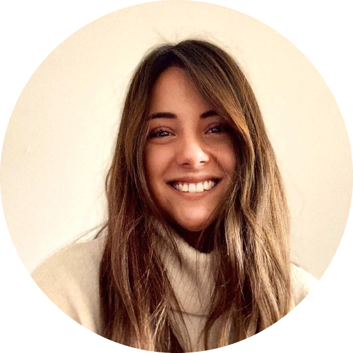

|  |
María Clara Baeza Vial
Primary School Teacher with History, Geography and Social Ciences Mencion
Pontificia Universidad Católica de Chile
|
I'm a professional with lidership habilities, teamwork, chearing and leading learning processes. In my student trayectory I ocuppied social, spiritual and cultural stations with the impetus to contribute to my student community. I also have an exchange experience studying the english languaje and culture in an Oxford's institution for a month. I have a clear porpouse of contributing to education, working to make it inclusive and meaningful for the lives of my students. Also enjoy live music, art an theatre.
Superior Education
School education
- 2000-2007: Padres Franceses School, Concepción
- 2008-2011: Saint John's School, Concepción
- 2012-2013: Sagrados Corazones de Manquehue, Santiago
Work Experience
| Dates |
Work |
| 2019 |
History teacher from 1st to 5fth grades during the 2nd semester in the "El Vergel" school in Providencia, Santiago |
| 2020 |
Spanish teacher from 5fth to 6th grade in the "José Artigas" school in Recoleta, Santiago |
| 2021-2022 |
General teacher in 3rd and 4rth grade in the "Amanda Labarca" school in Vitacura, Santiago |
Skills
| Microsoft Office | ⭐⭐⭐⭐⭐ |
Google tools | ⭐⭐⭐⭐ |
| Canva | ⭐⭐⭐⭐⭐ |
Plickers | ⭐⭐ |
My Hobbies
Contact Me